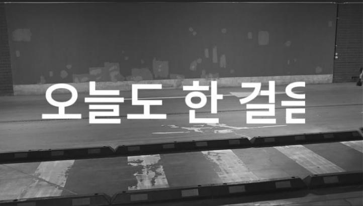
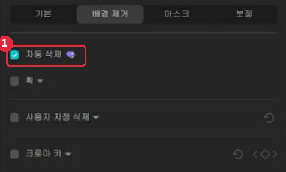
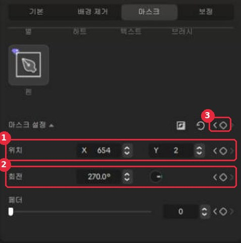
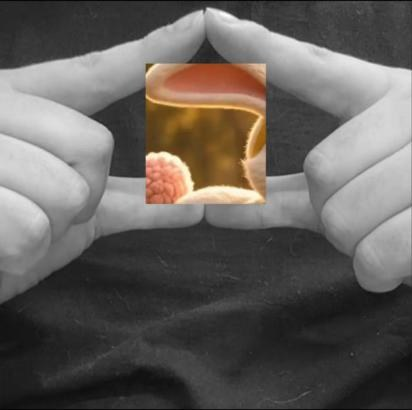
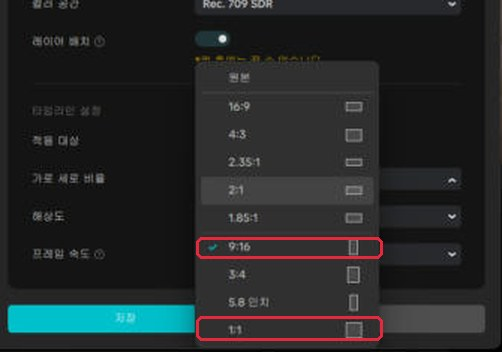
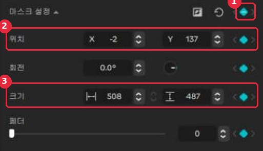
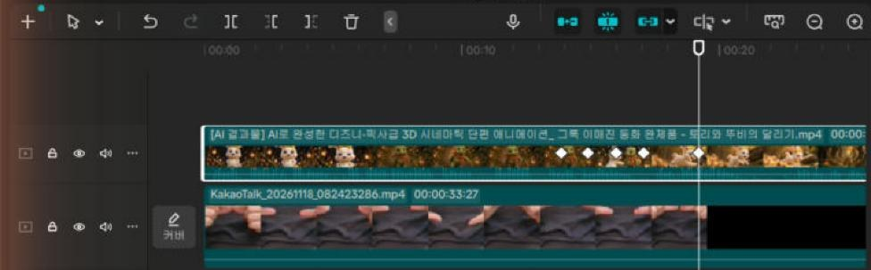
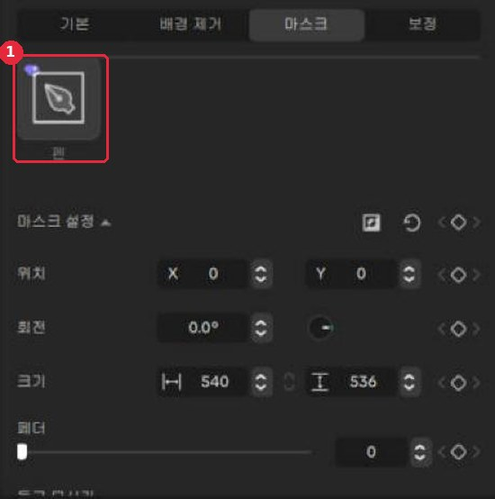

오늘의 학습 목표
- 캡컷 마스크(화면 일부만 보이게 가리는 틀)와 키프레임(시간마다 위치·크기를 기록해 두는 점)이 무엇인지 말할 수 있다.
- 걸어가는 사람 뒤에서 글자가 나타나는 사람 뒤 자막 영상을 만들 수 있다.
- 손가락으로 만든 네모 창 안에 내 AI 영상이 보이는 손가락 창 영상을 만들 수 있다.
- 손가락 창을 화면 가득 펼쳐 다음 장면으로 넘기고, 자막·음악을 넣어 내보낼 수 있다.
오늘의 원리 한 장
요즘 릴스에서 자주 보이는 「어떻게 만들었지?」 효과는 대부분 같은 원리예요. 클립을 두 줄로 겹치고, 위 클립에 마스크를 씌운 뒤, 키프레임으로 마스크를 움직이면 됩니다.
오늘 만드는 두 편


준비물
- 캡컷 PC 버전: 기본 과정은 모두 무료로 됩니다. 💎 표시가 붙은 건 캡컷 프로 기능이라 「한 걸음 더」에만 넣었어요.
- 걷는 영상 1개: 지난 시간 플로우(옴니 1.2)로 만든 「왼쪽에서 등장해 오른쪽으로 걷는」 영상, 또는 「자료 받기」의 걷는 사람 영상
- 손 영상 1개: 아래 「자료 받기」의 강사 손 영상, 또는 휴대폰으로 직접 찍은 영상 (찍는 법은 STEP 2)
- 내 AI 영상 1개: 지금까지 플로우로 만든 영상 아무거나. 밝고 색이 많은 영상일수록 창 안에서 잘 보여요.
자료 받기
- 영상 받기 버튼을 누르면 구글 드라이브 미리 보기가 열려요.
- 오른쪽 위 ⬇ 다운로드 아이콘 → 「바이러스 검사를 할 수 없음」 안내가 나오면 무시하고 다운로드
- 파일은 다운로드 폴더에 저장돼요. 캡컷 가져오기에서 다운로드 폴더를 열면 바로 보여요.
걷는 영상은 지난 시간 플로우에서 만든 내 영상을 써도 되고, 위 「걷는 사람 영상」을 받아 써도 돼요. 새로 만들려면 STEP 1 「플로우로 걷는 영상 만들기」를 따라 하세요.
표시 읽는 법
화면 사진의 1 2 빨간 번호는 설명 순서와 같아요.
STEP 1 · 사람 뒤에서 나타나는 자막
사람이 걸어가면 지나간 자리부터 글자가 한 글자씩 드러나요. 사람이 글자를 「끌고 가는」 것처럼 보이는 효과예요.

원리: 3겹 쌓기
가운데 글자에 분할 마스크를 씌우면 화면이 직선 하나로 나뉘어 한쪽에서만 글자가 보여요. 이 직선을 키프레임으로 사람 등 뒤에 붙여 따라가게 하면 완성이에요.

🟢 따라 하기 ① 영상 두 줄 + 사람 오리기
- 새 프로젝트 → 미디어 → 가져오기 → 걷는 영상 → 타임라인에 끌어다 놓기
- 타임라인 위 도구 모음에서 메인 트랙 자석(자석 모양) 끄기: 클립이 저절로 앞으로 붙지 않게 해요.
- 걷는 영상 선택 → Ctrl+C → Ctrl+V → 위 트랙에 같은 영상이 하나 더 생겨요 (시작점이 같아야 해요). 이게 「영상 두 줄」이에요.
- 위 복사본만 선택 → 오른쪽 동영상 → 배경 제거 → 자동 삭제 체크 → 사람만 남아요. 💎

🟢 따라 하기 ② 글자 넣고 줄 순서 맞추기
- 왼쪽 위 텍스트 → 기본 텍스트 → 문구 입력 (아래 카드에서 복사)
- 글자를 크게, 높이는 사람 몸통 높이에: 머리 위에 있으면 사람 「뒤」로 안 보여요. 세로(9:16)면 짧은 문구를 두 줄로.
- 글자 클립 길이를 영상 길이와 똑같이 맞추기
- 줄 순서 맞추기: 맨 위 = 사람 복사본 · 가운데 = 글자 · 맨 아래 = 원본. 글자 클립을 끌어서 두 영상 사이 트랙에 놓아요.
- 글자 클립 오른쪽 클릭 → 복합 클립(하위 프로젝트) 만들기 (단축키 Alt+G)

문구 카드 (눌러서 복사)
짧을수록 잘 보여요. 두 줄이 넘으면 사람 몸에 다 안 가려져요.
플로우로 걷는 영상 만들기 (시작·끝 사진)
받은 영상이나 지난 시간 영상을 쓰면 이 카드는 건너뛰어도 돼요. 새로 만들 때는 시작 사진 → 끝 사진 → 영상 순서예요. 이미지는 크레딧이 들지 않아요.
① 시작 사진 (이미지 · · Nano Banana 2.1 · x2)
Vertical 9:16 photo, straight side view (pure profile) of a Korean street in front of a small cafe with a warm wooden storefront, soft daylight. A Korean man in his 30s wearing a navy jacket, white T-shirt, beige trousers and white sneakers is walking from left to right: he is at the far LEFT side of the frame, full body visible from head to shoes, his face and body clearly facing RIGHT (the direction he walks), mid-stride with one foot forward. Plenty of empty space on the right side of the frame. Camera at chest height, perfectly level, completely still, wide enough to see the whole body with space above the head. Photorealistic. No text, no logo, no other people.
Wide 16:9 photo, straight side view (pure profile) of a Korean street in front of a small cafe with a warm wooden storefront, soft daylight. A Korean man in his 30s wearing a navy jacket, white T-shirt, beige trousers and white sneakers is walking from left to right: he is at the far LEFT side of the frame, full body visible from head to shoes, his face and body clearly facing RIGHT (the direction he walks), mid-stride with one foot forward. Plenty of empty space on the right side of the frame. Camera at chest height, perfectly level, completely still, wide enough to see the whole body with space above the head. Photorealistic. No text, no logo, no other people.
Vertical 9:16 photo, straight side view (pure profile) of a Korean street in front of a small flower shop with large windows full of plants and flowers, soft daylight. A Korean woman in her 30s wearing a beige trench coat, light blue jeans and white sneakers is walking from left to right: she is at the far LEFT side of the frame, full body visible from head to shoes, her face and body clearly facing RIGHT (the direction she walks), mid-stride with one foot forward. Plenty of empty space on the right side of the frame. Camera at chest height, perfectly level, completely still, wide enough to see the whole body with space above the head. Photorealistic. No text, no logo, no other people.
Wide 16:9 photo, straight side view (pure profile) of a Korean street in front of a small flower shop with large windows full of plants and flowers, soft daylight. A Korean woman in her 30s wearing a beige trench coat, light blue jeans and white sneakers is walking from left to right: she is at the far LEFT side of the frame, full body visible from head to shoes, her face and body clearly facing RIGHT (the direction she walks), mid-stride with one foot forward. Plenty of empty space on the right side of the frame. Camera at chest height, perfectly level, completely still, wide enough to see the whole body with space above the head. Photorealistic. No text, no logo, no other people.
장소를 바꾸려면 small cafe with a warm wooden storefront 부분만 바꿔요. 예: bakery(빵집), bookstore(서점).
② 끝 사진: 시작 사진을 [+]로 첨부
- 아래 입력창 왼쪽 + → 목록에서 시작 사진 누르기(아직 안 들어감) → 「프롬프트에 추가」
- 입력창 위에 사진이 붙었는지 보고 → 아래 프롬프트 붙여 넣기 → 만들기
Use the attached image as the base. Keep EVERYTHING exactly the same: same place, same camera position and framing, same light, same man with the same clothes. Only change: the man has walked to the far RIGHT side of the frame, close to the right edge, still facing RIGHT and still walking toward the right, mid-stride with the other foot forward. The left and center of the frame now show only the empty street and the shop. Vertical 9:16, photorealistic, no text.
Use the attached image as the base. Keep EVERYTHING exactly the same: same place, same camera position and framing, same light, same man with the same clothes. Only change: the man has walked to the far RIGHT side of the frame, close to the right edge, still facing RIGHT and still walking toward the right, mid-stride with the other foot forward. The left and center of the frame now show only the empty street and the shop. Wide 16:9, photorealistic, no text.
Use the attached image as the base. Keep EVERYTHING exactly the same: same place, same camera position and framing, same light, same woman with the same clothes. Only change: the woman has walked to the far RIGHT side of the frame, close to the right edge, still facing RIGHT and still walking toward the right, mid-stride with the other foot forward. The left and center of the frame now show only the empty street and the shop. Vertical 9:16, photorealistic, no text.
Use the attached image as the base. Keep EVERYTHING exactly the same: same place, same camera position and framing, same light, same woman with the same clothes. Only change: the woman has walked to the far RIGHT side of the frame, close to the right edge, still facing RIGHT and still walking toward the right, mid-stride with the other foot forward. The left and center of the frame now show only the empty street and the shop. Wide 16:9, photorealistic, no text.
③ 영상 설정
- 동영상 → 프레임 → (사진과 같은 비율)
- 모델 Omni 1.2 Flash · 화질 연습은 360p, 올릴 것은 720p
- 길이 10초 (시작+끝 사진을 쓰면 10초까지만 돼요) · x1 → 크레딧 숫자 확인
④ 시작·종료 칸에 사진 넣기
- 시작 칸 → 시작 사진 → 「프롬프트에 추가」 / 종료 칸 → 끝 사진 → 「프롬프트에 추가」
- 시작 = 왼쪽 끝 사람, 종료 = 오른쪽 끝 사람인지 눈으로 확인 (같은 사진이 두 번 들어가는 실수가 잦아요. 칸을 다시 누르면 비워져요.)
⑤ 영상 프롬프트
Static locked-off camera, the camera does not move, zoom or pan at all. The man walks from the left side of the frame to the right side in profile, at a steady, constant, relaxed walking pace from start to end, natural arm swing, never stopping, never speeding up. He keeps facing right the whole time. The background, shop and lighting stay exactly the same. Realistic, natural motion. No text, no other people.
Static locked-off camera, the camera does not move, zoom or pan at all. The woman walks from the left side of the frame to the right side in profile, at a steady, constant, relaxed walking pace from start to end, natural arm swing, never stopping, never speeding up. She keeps facing right the whole time. The background, shop and lighting stay exactly the same. Realistic, natural motion. No text, no other people.
핵심 말: Static locked-off camera(카메라 고정) · steady, constant pace(일정한 걸음) · keeps facing right(계속 오른쪽 보기). 카메라가 움직이면 글자가 배경 위에서 미끄러져 보여요.
⑥ 결과 확인 → 내려받기
카메라가 고정됐는지, 처음부터 끝까지 오른쪽으로 걷는지 확인하고 → 영상 위 다운로드 → 캡컷으로 가져와요.
🟢 따라 하기 ③ 분할 마스크
- 복합 클립 선택 → 오른쪽 패널 동영상 → 마스크 → 분할
- 패널을 아래로 내려 마스크 설정 → 회전에 270 입력 (사람이 왼쪽 → 오른쪽으로 걸을 때)



🟢 따라 하기 ④ 키프레임으로 사람 따라가기
- 재생 헤드를 사람이 처음 화면에 들어온 순간으로 옮기기
- 마스크 설정 위치 X 숫자를 바꾸거나 화면의 흰 선을 끌어서, 선을 사람 등 바로 뒤에 두기
- 마스크 설정 줄 오른쪽 ◇를 눌러 키프레임 만들기 (◆ 파란색으로 바뀜)
- 재생 헤드를 1초 뒤로 → 선을 다시 사람 등 뒤로 옮기기 → 숫자만 바뀌어도 키프레임이 저절로 추가돼요.
- 사람이 화면 밖으로 나갈 때까지 1초마다 반복
- 사람이 나간 뒤에는 선을 화면 오른쪽 끝 밖까지 옮기기 → 글자 전체가 보여요.
- 처음부터 재생해 보고, 글자가 사람보다 앞서 나오는 곳에 키프레임 하나 더
- 오른쪽 위 내보내기로 한 편 저장 (STEP 3 「한 걸음 더」에서 손가락 창 영상과 이어 붙여요)
🔵 한 걸음 더
바탕만 흑백: 맨 아래 원본 선택 → 조정 → 기본 → 채도를 끝까지 왼쪽으로 (STEP 2에 사진 있어요). 사람 복사본은 컬러로 두면 사람만 도드라져요.
스르륵 드러나기: 마스크 설정 페더(가장자리 흐림)를 5~10으로 올리면 글자 경계가 부드러워져요.
사람에게만 효과: 편집효과에서 흑백 플래시 · 플래시 포커스 · 네온 같은 효과를 맨 위 사람 복사본 위로 끌어다 놓으면 사람에게만 효과가 들어가요.
⚠️ 막힐 때
| 이럴 때 | 이렇게 |
|---|---|
| 마스크 메뉴가 안 보여요 | 글자를 복합 클립으로 바꿨는지 확인 (Alt+G) |
| 글자가 반대쪽에 보여요 | 회전 270° ↔ 90°로 바꾸기 (사람이 오른쪽 → 왼쪽으로 걸으면 90°) |
| 글자가 사람보다 먼저 나와요 | 그 시점에 키프레임 추가 → 선을 사람 등 뒤로 |
| 글자가 머리 위에 떠 있어요 | 글자 높이를 몸통 높이로 내리기 |
| 클립이 앞으로 당겨 붙어요 | 메인 트랙 자석 끄기 |
| 글자가 사람 앞에 덮여요 | 줄 순서 확인: 사람 복사본이 맨 위, 글자가 가운데 |
| 사람 복사본에 배경이 남아요 | 위 복사본만 선택했는지 확인 → 자동 삭제 다시 체크 |
| 값을 바꿨는데 키프레임이 안 생겨요 | 첫 키프레임(◇)을 먼저 눌렀는지 확인 |
STEP 2 · 손가락 창 안에 내 영상
엄지와 검지로 만든 네모 창 안에서만 컬러 AI 영상이 보이고, 창 밖 손은 흑백이에요. 손가락이 움직이면 창도 같이 움직여요.


원리: 2겹 쌓기
손 영상 직접 찍을 때
- 어두운 단색 천·벽 앞에서 찍기 (손이 또렷하게 보여요)
- 휴대폰은 세워서 고정, 손만 움직이기
- 엄지·검지로 네모를 만들고 천천히 벌렸다 오므리기: 빠르면 키프레임이 많이 필요해요.
- 손가락 끝이 화면 밖으로 나가지 않게
🟢 따라 하기 ① 손 영상 준비
- 강사 손 영상을 아직 안 받았으면 → ⬇ 강사 손 영상 받기 (다운로드 폴더에 저장)
- 새 프로젝트 → 손 영상 가져오기 → 타임라인에 놓기
- 가운데 세부 정보 → 수정하기 → 가로 세로 비율: 강사 손 영상은 1:1, 휴대폰으로 세워 찍었으면 9:16 → 저장
- 강사 손 영상만: 손 영상 클립 선택 → 오른쪽 동영상 → 기본 → 확대에 185 입력 → 사방의 검은 띠가 사라지고 손이 화면에 꽉 차요. (직접 찍은 영상은 건너뛰기)
- 손가락 창이 또렷한 5~6초만 남기기 (강사 영상은 13초~19초)
· 재생 헤드 13초 → Ctrl+B → 앞 조각 선택 → Delete
· 손 영상이 0초부터 시작하면 6초 지점 → Ctrl+B → 뒤 조각 삭제

🟢 따라 하기 ② 위에 내 영상 + 직사각형 마스크
- 내 AI 영상을 손 영상 위 트랙, 0초부터 끌어다 놓기
- 내 영상이 화면을 다 채우지 못하고 위아래에 검은 띠가 보이면 → 위 클립 동영상 → 기본 → 확대를 띠가 없어질 때까지 키우기 (가로 영상이면 180 정도)
- 위 클립 선택 → 동영상 → 마스크 → 마스크 추가(+) → 직사각형


🟢 따라 하기 ③ 키프레임으로 손가락 따라가기
- 재생 헤드 0초 → 화면의 네모 틀을 끌어서 손가락 끝 4개의 안쪽에 맞추기 (모서리 점 = 크기, 안쪽 = 위치)
- 마스크 설정 줄 오른쪽 ◇ 누르기 → 첫 키프레임
- 재생 헤드 1초 뒤 → 틀을 다시 손가락 끝 안쪽에 맞추기 (키프레임 자동 추가)
- 구간이 끝날 때까지 반복 → 재생해서 어긋난 곳에 하나 더

막힐 때 넣어 보는 숫자 (강사 손 영상 · 1:1 · 13초에서 자른 뒤)
| 시간 | 위치 X | 위치 Y | 크기 가로 | 크기 세로 |
|---|---|---|---|---|
| 0초 | -2 | 137 | 508 | 487 |
| 1초 | -18 | 162 | 419 | 419 |
| 3초 | -10 | 170 | 180 | 350 |
| 4초 | -10 | 187 | 316 | 368 |
끌어서 맞추기가 기본이에요. 숫자는 막힐 때 넣어 보는 출발점이라, 넣은 뒤 화면을 보며 손가락 끝에 맞게 조금씩 고치세요. 내 영상 확대 값에 따라 조금 달라질 수 있어요.

🟢 따라 하기 ④ 창 밖 흑백
- 아래 손 영상 선택 → 오른쪽 패널 조정 → 기본
- 아래로 내려 채도 막대를 끝까지 왼쪽으로 (-50)

🔵 한 걸음 더
둥근 모서리·회전: 직사각형 마스크 설정 아래쪽 둥근 모서리, 위쪽 회전도 키프레임이 돼요. 손이 기울면 회전도 같이 맞춰 보세요.
💎 펜 마스크: 마스크 → 펜 → 손가락 끝 4곳에 점 하나씩 → 몇 프레임마다 점 위치를 다시 맞추기. 기울어진 네모나 세모 창까지 딱 맞아요.

릴스 원본 버전 (얼굴 앞 손가락): 내 얼굴 앞에서 손가락 창을 찍기 → 클립 복사해 위 트랙에 → 위 클립에 마스크 → 아래 원본에만 편집효과(편집효과 탭에서 효과를 아래 클립 위로 끌어다 놓기). 창 안은 원래 얼굴, 창 밖은 효과가 돼요.
⚠️ 막힐 때
| 이럴 때 | 이렇게 |
|---|---|
| 창이 손가락을 덮어요 | 틀을 손가락 끝 안쪽으로 줄이기 |
| 키프레임 사이에서 창이 어긋나요 | 어긋난 시점에 키프레임 하나 더 |
| 창 안까지 흑백이에요 | 채도는 아래 손 영상만 |
| 내 영상이 안 보여요 | 내 영상이 위 트랙인지 확인 |
| 펜을 누르니 결제 창이 떠요 | 💎 프로 기능 → 직사각형으로 하기 |
| 손 영상 둘레에 검은 띠가 있어요 | 강사 손 영상은 1:1 + 확대 185, 직접 찍은 세로 영상은 9:16 |
| 창 안 내 영상 위아래가 검어요 | 위 클립 확대를 키우기 (180 정도) |
STEP 3 · 창을 펼쳐 다음 장면으로
손가락 창이 마지막에 화면 가득 펼쳐지면서 내 AI 영상으로 넘어가요. 장면 전환 효과를 따로 넣지 않아도 마스크 키프레임 하나로 됩니다.


🟢 따라 하기 ① 화면 가득 펼치기
- 재생 헤드를 마지막 키프레임 1~2초 뒤로 (강사 영상은 6초)
- 위 클립 선택 → 마스크 설정 위치 X 0, Y 0 · 크기 1100 × 1100 입력 → 키프레임이 저절로 생기며 창이 화면 가득
- 9:16 프로젝트라면 크기를 1100 × 2000처럼 화면보다 크게 · 펼쳤는데 가장자리가 남으면 더 크게
- 손 영상은 여기서 끝나고, 그 뒤로는 내 영상만 이어져요. 내 영상 끝을 원하는 길이(전체 8~12초)로 자르기

🟢 따라 하기 ② 자막 · 음악 · 내보내기
- 텍스트 → 기본 텍스트로 펼쳐지는 순간에 제목 한 줄 (아래 카드에서 복사)
- 음악: 유튜브 오디오 보관함 또는 픽사베이에서 받아 가져오기 → 볼륨 -15dB → 끝에 페이드 아웃
- 오른쪽 위 내보내기 → 해상도 1080p → 내보내기
🔵 한 걸음 더
릴스 한 편 묶기: STEP 1 사람 뒤 자막 영상 + STEP 3 손가락 창 영상을 한 프로젝트에 이어 붙여 15초 릴스 한 편
효과음: 창이 펼쳐지는 순간에 「휙」 효과음 (오디오 → 효과음 → 「whoosh」 검색)
펼쳐질 때 부드럽게: 마지막 키프레임에서 마스크 페더를 10~20으로 올리면 창 가장자리가 흐려지며 펼쳐져요.
⚠️ 막힐 때
| 이럴 때 | 이렇게 |
|---|---|
| 펼친 뒤에도 가장자리에 손이 보여요 | 크기를 더 크게 (1300 등) |
| 창이 너무 갑자기 커져요 | 마지막 두 키프레임 사이를 2초로 벌리기 |
| 펼친 뒤 화면이 검어요 | 내 영상이 그 시점까지 이어지는지(클립 길이) 확인 |